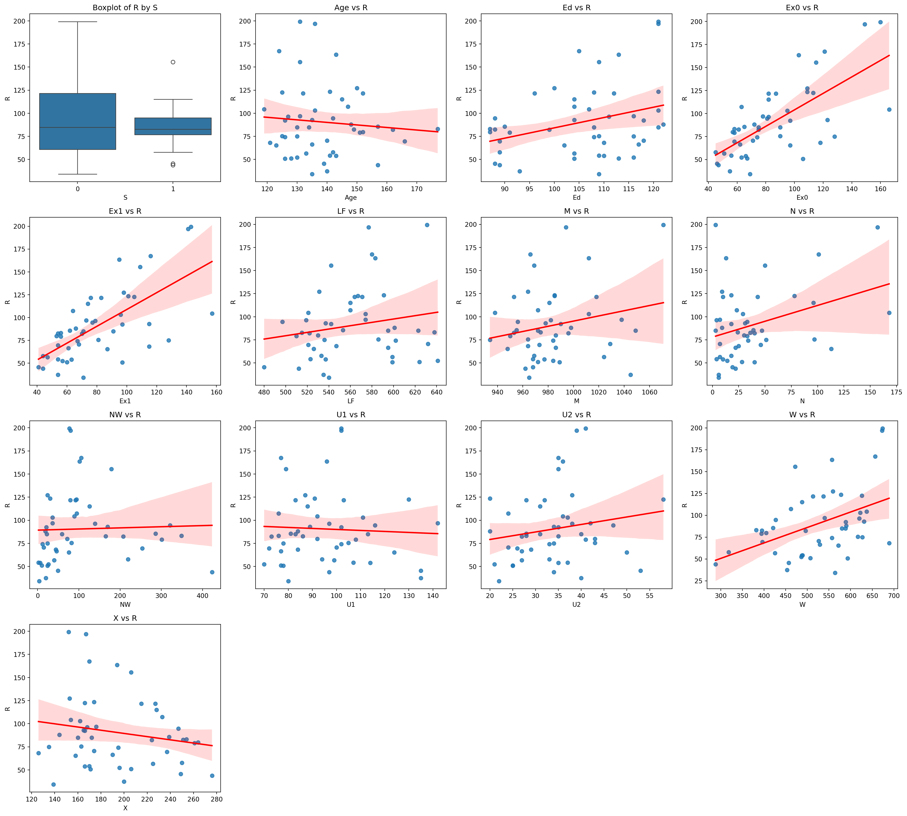
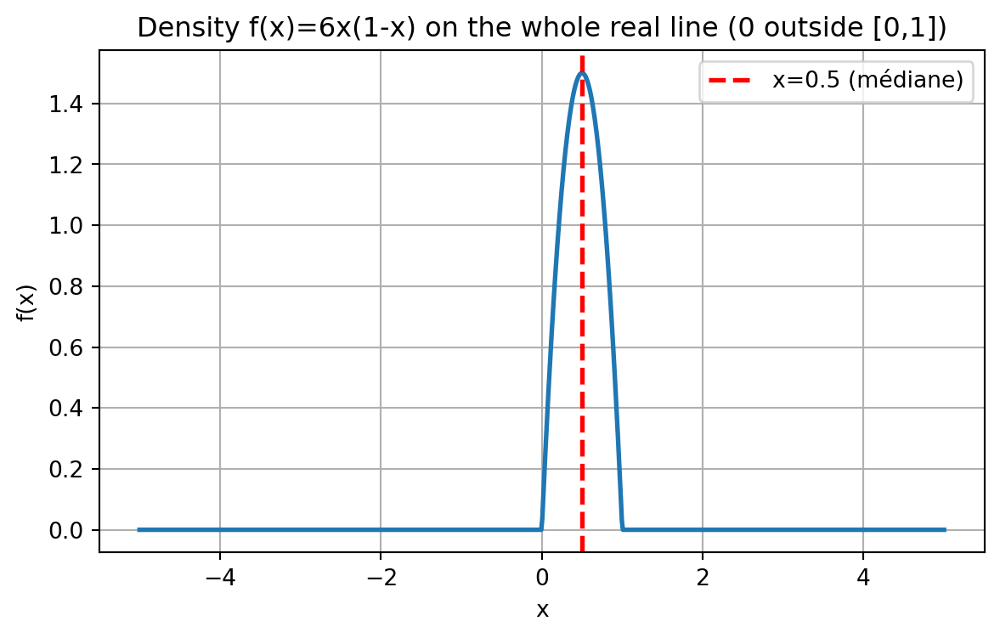
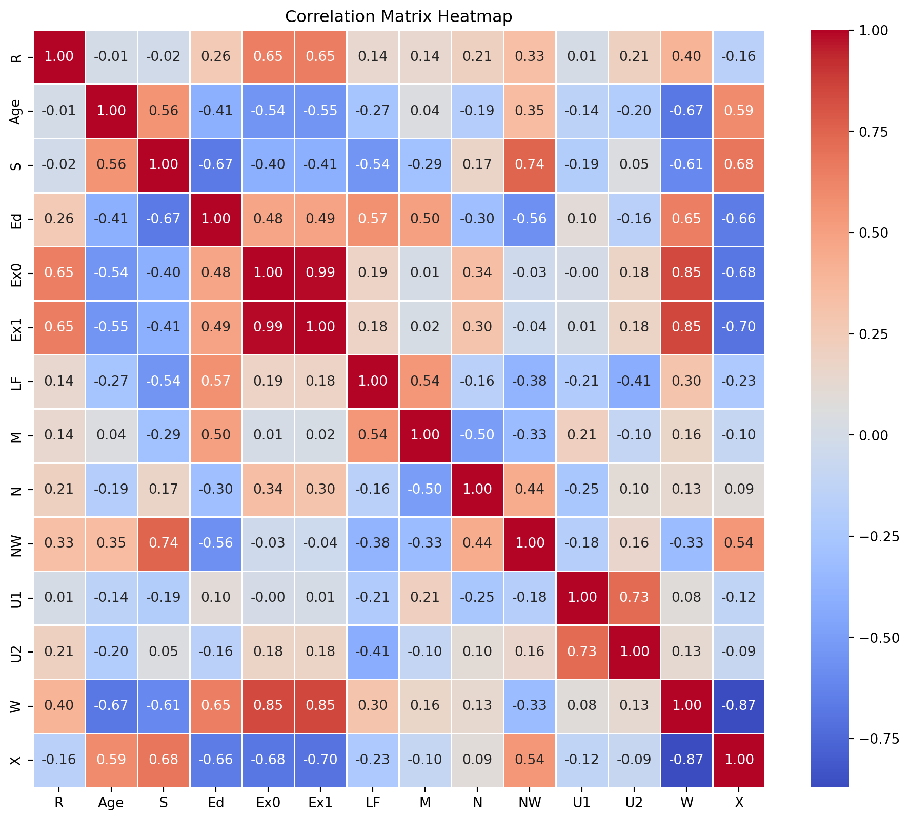

Vous trouverez ici certains exercices de la fiche de TD, qui vous permettront de mieux comprendre les concepts abordés par le professeur pendant les cours. N’hésitez pas à me contacter si vous avez des questions ou des suggestions.
1. Espaces probabilisés
Exercice 2
Supposons que \(\mathbb{P}(A \cup B) = 0.6\) et \(\mathbb{P}(A \cup B^c) = 0.8\).
Déterminer \(\mathbb{P}(A)\).
Correction Exercice 2
On se place sur un espace probabilisé \((\Omega, \mathcal{F}, \mathbb{P})\).
Soient \(A, B \in \mathcal{F}\) deux événements.
On utilise d’abord les propriétés des complémentaires : \[
(A \cup B)^c = A^c \cap B^c,
\qquad
(A \cup B^c)^c = A^c \cap B.
\]
Les deux événements \((A \cup B)^c\) et \((A \cup B^c)^c\) sont disjoints, car : \[
(A \cup B)^c \cup (A \cup B^c)^c
= (A^c \cap B^c) \cup (A^c \cap B)
= A^c.
\]
De plus, pour deux événements disjoints \(E\) et \(F\), \[
\mathbb{P}(E \cup F) = \mathbb{P}(E) + \mathbb{P}(F).
\]
Par conséquent, \[
\mathbb{P}(A^c)
= \mathbb{P}\big( (A \cup B)^c \big)
+ \mathbb{P}\big( (A \cup B^c)^c \big).
\]
Or \[
\mathbb{P}\big( (A \cup B)^c \big)
= 1 - \mathbb{P}(A \cup B)
= 1 - 0.6
= 0.4,
\]\[
\mathbb{P}\big( (A \cup B^c)^c \big)
= 1 - \mathbb{P}(A \cup B^c)
= 1 - 0.8
= 0.2.
\]
Dans une ville, 75% de la population a les cheveux bruns, 50% a les yeux marron, et 35% possède à la fois des cheveux bruns et des yeux marron.
On sélectionne une personne au hasard dans la ville. Quelle est la probabilité :
qu’elle ait les yeux marron ou des cheveux bruns ?
qu’elle n’ait ni les yeux marron, ni des cheveux bruns ?
Correction Exercice 3
On se place sur un espace probabilisé \((\Omega, \mathcal{F}, \mathbb{P})\) où \(\Omega = \{\text{personnes de la ville}\}\).
On définit les événements : - \(B = \{\text{la personne a les cheveux bruns}\}\), - \(M = \{\text{la personne a les yeux marron}\}\).
Dans les deux cas, on obtient : \[
\boxed{\mathbb{P}(\text{obtenir au moins un 6 en 3 lancers}) = \frac{91}{216} \approx 0.421.}
\]
Je reviendrai ici sur l’exercice 5 que nous n’avons pas eu la possibilité de mettre oeuvre la simulation monte Carlo.
Correction de l’exercice 5
Nous sélectionnons un entier au hasard parmi les N = 5,000 entiers qui sont dans l’intervalle [0, 4999]. Quelle est la probabilité qu’il soit divisible par 4,7 ou 10 ?
Modifier le code R vu en cours pour estimer cette probabilité par une simulation de Monte-Carlo pour vérifier ce résultat. Vous utiliserez au moins 50,000 simulations.
Pour résoudre cette exercice, il faut d’abord définir l’espace probabilisé. L’espace probabilisé est défini par le triplet (Ω, F, P) où:
Ω est l’ensemble des résultats possibles. Dans notre cas, Ω = {0, 1, 2, …, 4999}.
F est la σ-algèbre des événements. Ici, nous pouvons considérer les événements comme les sous-ensembles de Ω.
P est la mesure de probabilité. Dans notre cas, chaque entier a une probabilité égale d’être sélectionné. On dit encore que la loi de probabilité est uniforme sur Ω.
Le cardinal de l’ensemble Ω est |Ω| = 5000. La probabilité d’un élément spécifique dans Ω est donc \(P({x}) = \frac{1}{5000}\) pour tout x dans Ω.
Après avoir défini l’espace probabilisé, nous pouvons maintenant définir l’événement A que nous voulons étudier. De ce fait, définissons les événements suivants:
\(A_4\) : l’événement que l’entier sélectionné est divisible par 4.
\(A_7\) : l’événement que l’entier sélectionné est divisible par 7.
\(A_{10}\) : l’événement que l’entier sélectionné est divisible par 10. L’événement A que nous voulons étudier est l’union de ces trois événements:
\[
A = A_4 \cup A_7 \cup A_{10}
\]
Nous cherchons à calculer la probabilité de l’événement A, c’est-à-dire \(P(A)\). Pour cela, nous allons utiliser la formule inclusion-exclusion: \[
\begin{aligned}
\mathbb{P}(A_4 \cup A_7 \cup A_{10})
&= \mathbb{P}(A_4) + \mathbb{P}(A_7) + \mathbb{P}(A_{10}) \\
&\quad - \big\{\, \mathbb{P}(A_4 \cap A_7) + \mathbb{P}(A_4 \cap A_{10}) + \mathbb{P}(A_7 \cap A_{10}) \,\big\} \\
&\quad + \mathbb{P}(A_4 \cap A_7 \cap A_{10}).
\end{aligned}
\]
Calculons maintenant chaque terme de cette formule: Pour calculer chaque probabilité, nous devons compter le nombre d’entiers dans Ω qui satisfont chaque condition \(A_i\). Et la probabilité de chaque événement est donnée par le rapport du nombre d’entiers satisfaisant la condition sur le cardinal de l’ensemble Ω :
Pour \(A_4\) : Les entiers divisibles par 4 sont 0, 4, 8, …, 4996. Ainsi le nombre d’entiers divisibles par 4 est de la forme \(4k\) et qui vérifient \(0 \leq 4(k+1) \leq 5000 < 4(k+2)\), donc de cette inégalité, on déduit que \(k\) vérifie l’inégalité sous dessous :
\[
k \leq \frac{4999}{4} < k+1.
\]
Donc le nombre d’entiers divisibles par 4 correspond à la partie entière de \(\frac{4999}{4}\) plus 1 (pour inclure le 0), soit: \[
\text{nombre d'entiers divisibles par 4} = \left\lfloor\frac{4999}{4}\right\rfloor + 1 = 1249 + 1 = 1250.
\]
Donc, la probabilité que l’entier sélectionné soit divisible par 4 est: \[
P(A_4) = \frac{1250}{5000} = 0.25.
\]
Pour \(A_7\) : Les entiers divisibles par 7 sont 0, 7, 14, …, 4996. En suivant le même raisonnement que pour \(A_4\), nous trouvons:
Donc, la probabilité que l’entier sélectionné soit divisible par 7 est: \[
P(A_7) = \frac{715}{5000} = 0.143.
\]
Pour \(A_{10}\) : Les entiers divisibles par 10 sont 0, 10, 20, …, 4990. En suivant le même raisonnement que pour \(A_4\), nous trouvons: \[
\text{nombre d'entiers divisibles par 10} = \left\lfloor\frac{4999}{10}\right\rfloor + 1 = 499 + 1 = 500.
\]
Donc, la probabilité que l’entier sélectionné soit divisible par 10 est: \[
P(A_{10}) = \frac{500}{5000} = 0.1.
\]
Pour \(A_4 \cap A_7\) : Les entiers qui sont divisibles par 4 et 7 sont ceux qui sont divisibles par 28 qui est le PPCM de 4 et 7. En suivant le même raisonnement que pour \(A_4\), nous trouvons: \[
\text{nombre d'entiers divisibles par 28} = \left\lfloor\frac{4999}{28}\right\rfloor + 1 = 178 + 1 = 179.
\]
Donc, la probabilité que l’entier sélectionné soit divisible par 4 et 7 est:
Pour \(A_4 \cap A_{10}\) : Les entiers qui sont divisibles par 4 et 10 sont ceux qui sont divisibles par 20 qui est le PPCM de 4 et 10. En suivant le même raisonnement que pour \(A_4, nous trouvons:\)$ = + 1 = 249 + 1 = 250. $$
Donc, la probabilité que l’entier sélectionné soit divisible par 4 et 10 est: \[
P(A_4 \cap A_{10}) = \frac{250}{5000} = 0.05.
\]
Pour \(A_7 \cap A_{10}\) : Les entiers qui sont divisibles par 7 et 10 sont ceux qui sont divisibles par 70 qui est le PPCM de 7 et 10. En suivant le même raisonnement que pour $A_4, nous trouvons:
Donc, la probabilité que l’entier sélectionné soit divisible par 7 et 10 est: \[
P(A_7 \cap A_{10}) = \frac{72}{5000} = 0.0144.
\]
Pour \(A_4 \cap A_7 \cap A_{10}\) : Les entiers qui sont divisibles par 4, 7 et 10 sont ceux qui sont divisibles par 140 qui est le PPCM de 4, 7 et 10. En suivant le même raisonnement que pour \(A_4\), nous trouvons:
Donc, la probabilité qu’un entier sélectionné au hasard parmi les 5000 entiers soit divisible par 4, 7 ou 10 est de 0.4 ou 40%.
Maintenant, nous allons vérifier ce résultat par une simulation de Monte-Carlo en R avec au moins 50,000 simulations. Une simulation de Monte-Carlo est une méthode statistique qui utilise des échantillons aléatoires pour estimer des propriétés mathématiques ou physiques comme des espérances, des intégrales ou des probabilités. Cette méthode fonctionne en générant un grand nombre de scénarios aléatoires et en observant les résultats pour obtenir une estimation statistique :
On fixe le nombre de simulations, disons n = 50000.
On initialise un compteur pour le nombre de succès (entiers divisibles par 4, 7 ou 10).
Pour chaque simulation, on génère un entier aléatoire entre 0 et 4999.
On vérifie si cet entier est divisible par 4, 7 ou 10. Si c’est le cas, on incrémente le compteur de succès.
Après avoir effectué toutes les simulations, on calcule la probabilité estimée comme le ratio du nombre de succès sur le nombre total de simulations.
Voici un exemple de code R pour effectuer cette simulation de Monte-Carlo :
# Monte Carlo in Python with running estimate and plot (matplotlib only)import numpy as npimport matplotlib.pyplot as plt# --- Parameters (mirror your R snippet) ---seed =123N =4999# sample from 0..N (inclusive)M =50_000# number of simulationsrng = np.random.default_rng(seed)x = rng.integers(low=0, high=N+1, size=M) # uniform integers in [0, N]is_div = (x %4==0) | (x %7==0) | (x %10==0)# Final Monte Carlo estimate (same as R's mean(is_div))p_hat = is_div.mean()# Running estimates vs number of simulationsrunning_est = np.cumsum(is_div) / np.arange(1, M +1)# Mean of the running estimates (to draw an horizontal reference line)mean_running = running_est.mean()# --- Plot ---plt.figure(figsize=(7.24, 4.07), dpi=100) # ~724x407 pxplt.plot(np.arange(1, M +1), running_est, linewidth=2)# Add the colored horizontal line at mean_runningplt.axhline(mean_running, linestyle="--", linewidth=2, color="red")plt.xlabel("Nombre de simulations")plt.ylabel("Estimation de la probabilité")plt.title("Convergence de l’estimation Monte-Carlo", fontsize=14, weight="bold")plt.suptitle("Courbe de l’estimation cumulée; ligne horizontale = moyenne des estimations", fontsize=10, color="gray")# Style cues similar to the provided seaborn exampleax = plt.gca()for spine in ["top", "right"]: ax.spines[spine].set_visible(False)plt.grid(False)plt.tight_layout()plt.show()p_hat
np.float64(0.3965)
2. Probabilité conditionnelle et indépendance
Exercice 2
Une classe contient un total de 108 étudiants. Parmi ceux-ci, 36 indiquent qu’ils pratiquent un sport de haut niveau, et 21 étudiants parmi ces 36 indiquent qu’ils préfèrent s’entraîner le matin plutôt que l’après-midi.
Parmi les étudiants qui ne pratiquent pas un sport de haut niveau, 24 indiquent qu’ils préfèrent pratiquer le sport le matin plutôt que l’après-midi.
Pour un étudiant pris au hasard dans la classe, calculer les probabilités suivantes :
probabilité d’être un sportif de haut niveau sachant que l’on préfère s’entraîner le matin ;
probabilité de préférer s’entraîner le matin sachant qu’on ne pratique pas un sport de haut niveau ;
probabilité de ne pas pratiquer un sport de haut niveau sachant que l’on préfère s’entraîner l’après-midi.
Correction Exercice 2
On se place sur un espace probabilisé \((\Omega, \mathcal{F}, \mathbb{P})\), où \(\Omega = \{\text{ensemble des étudiants de la classe}\}\), \(\mathcal{F} = \mathcal{P}(\Omega)\) (toutes les parties de \(\Omega\))
et \(\mathbb{P}\) est la probabilité uniforme sur \(\Omega\) (tous les étudiants sont équiprobables).
Nous notons :
\(H = \{\text{l’étudiant pratique un sport de haut niveau}\}\),
\(M = \{\text{l’étudiant préfère s’entraîner le matin}\}\).
1 Probabilité d’être un sportif de haut niveau sachant que l’on préfère s’entraîner le matin
On cherche \(\mathbb{P}(H \mid M)\).
En appliquant la formule de Bayes : \[
\mathbb{P}(H \mid M) = \frac{\mathbb{P}(M \mid H)\mathbb{P}(H)}{\mathbb{P}(M \mid H)\mathbb{P}(H) + \mathbb{P}(M \mid H^c)\mathbb{P}(H^c)}.
\]
En remplaçant par les valeurs numériques : \[
\mathbb{P}(H \mid M)
= \frac{\frac{7}{12} \times \frac{1}{3}}
{\frac{7}{12} \times \frac{1}{3} + \frac{1}{3} \times \frac{2}{3}}
= \frac{\frac{7}{36}}{\frac{7}{36} + \frac{2}{9}}
= \frac{7}{15}.
\]
2 Probabilité de préférer s’entraîner le matin sachant qu’on ne pratique pas un sport de haut niveau
Cette probabilité est directement donnée par l’énoncé : \[
\mathbb{P}(M \mid H^c) = \frac{1}{3}.
\]
3 Probabilité de ne pas pratiquer un sport de haut niveau sachant que l’on préfère s’entraîner l’après-midi
On cherche \(\mathbb{P}(H^c \mid M^c)\).
On applique encore une fois la formule de Bayes : \[
\mathbb{P}(H^c \mid M^c)
= \frac{\mathbb{P}(M^c \mid H^c)\mathbb{P}(H^c)}
{\mathbb{P}(M^c \mid H^c)\mathbb{P}(H^c) + \mathbb{P}(M^c \mid H)\mathbb{P}(H)}.
\]
Pour chacune des deux affirmations suivantes, montrer qu’elle est vraie pour tous les événements \(A\) et \(B\) pour lesquels les probabilités conditionnelles sont calculables, ou donner un contre-exemple.
\(\mathbb{P}(A \mid B) + \mathbb{P}(A \mid B^c) = 1.\)
\(\mathbb{P}(A \mid B) + \mathbb{P}(A^c \mid B) = 1.\)
Correction Exercice 3
Pour la première affirmation, nous avons en utilisant la formule de Bayes et en supposant que \(\mathbb{P}(B) > 0\) et \(\mathbb{P}(B^c) > 0\) :
De ce fait, si nous additionnons les deux probabilités conditionnelles, nous obtenons : \[
\mathbb{P}(A \mid B) + \mathbb{P}(A \mid B^c)
= \frac{\mathbb{P}(A \cap B)}{\mathbb{P}(B)} + \frac{\mathbb{P}(A \cap B^c)}{\mathbb{P}(B^c)}.
\]
Si on se met dans une situation où \(\mathbb{P}(B) = \mathbb{P}(B^c) = 0.5\), et en utilisant le fait que \(\mathbb{P}(A \cap B) + \mathbb{P}(A \cap B^c) = \mathbb{P}(A)\), nous obtenons : \[
\mathbb{P}(A \mid B) + \mathbb{P}(A \mid B^c) = 2 \mathbb{P}(A).
\]
Donc, cette affirmation est fausse dès que \(\mathbb{P}(A) \neq 0.5\). Et il est facile de trouver un contre-exemple, c’est-à-dire une expérience aléatoire où cette condition n’est pas satisfaite.
En effet, si nous considérons une expérience aléatoire consistant à lancer un dé équilibré à six faces, et nous définissons les événements suivants : - \(A\) : l’événement que le résultat est un 6, - \(B\) : l’événement que le résultat est un nombre pair.
Nous avons : \[
\mathbb{P}(B) = \frac{3}{6} = 0.5 = \mathbb{P}(B^c),
\] et \[
\mathbb{P}(A) = \frac{1}{6} \neq 0.5.
\]
Et dans ce cas l’affirmation ne tient pas.
La seconde affirmation est toujours vraie. On peut le démontrer en utilisant la formule de Bayes : \[
\mathbb{P}(A \mid B) = \frac{\mathbb{P}(A \cap B)}{\mathbb{P}(B)},
\qquad \text{et} \qquad
\mathbb{P}(A^c \mid B) = \frac{\mathbb{P}(A^c \cap B)}{\mathbb{P}(B)}.
\]
En additionnant les deux probabilités conditionnelles, nous obtenons : \[
\mathbb{P}(A \mid B) + \mathbb{P}(A^c \mid B)
= \frac{\mathbb{P}(A \cap B)}{\mathbb{P}(B)} + \frac{\mathbb{P}(A^c \cap B)}{\mathbb{P}(B)}
= \frac{\mathbb{P}((A \cap B) \cup (A^c \cap B))}{\mathbb{P}(B)}
= \frac{\mathbb{P}(B)}{\mathbb{P}(B)} = 1.
\]
Ou tout simplement en remarquant que \(P(.|B)\) définit une probabilité sur l’espace probabilisé restreint à l’événement B, et donc la somme des probabilités d’un événement et de son complément est égale à 1.
Exercice 4
Un jeu de 32 cartes contient une carte manquante. Nous sélectionnons au hasard une carte parmi les 31 cartes restantes.
Calculer la probabilité que la carte tirée soit un cœur, en utilisant un conditionnement sur la carte manquante.
Correction Exercice 4
On se place sur un espace probabilisé \((\Omega,\mathcal{F},\mathbb{P})\) défini ainsi :
\(\Omega\) est l’ensemble des couples \[
\Omega = \{(c_{\text{manq}}, c_{\text{tirée}})\mid c_{\text{manq}}, c_{\text{tirée}} \text{ sont des cartes du jeu de 32, } c_{\text{tirée}}\neq c_{\text{manq}}\}.
\] Autrement dit, on choisit d’abord la carte manquante, puis on tire une carte parmi les 31 restantes.
Chaque couple possible est supposé équiprobable, donc \[
\mathbb{P}(\{(c_{\text{manq}}, c_{\text{tirée}})\}) = \frac{1}{32\times 31}.
\]
On introduit les événements suivants :
\(M = \{\text{la carte manquante est un cœur}\}\),
\(T = \{\text{la carte tirée est un cœur}\}\).
Dans un jeu de 32 cartes, il y a 8 cœurs au total.
Si vous avez des difficultés pour définir l’espace probabilisé, je vous conseille de définir uniquement les événements \(M\) et \(T\) et de raisonner en termes de probabilités conditionnelles.
1 Probabilités conditionnelles
Si la carte manquante est un cœur (événement \(M\)), il reste \(7\) cœurs parmi les \(31\) cartes encore présentes, donc \[
\mathbb{P}(T \mid M) = \frac{7}{31}.
\]
Si la carte manquante n’est pas un cœur (événement \(M^c\)), il reste toujours les \(8\) cœurs dans les \(31\) cartes présentes, donc \[
\mathbb{P}(T \mid M^c) = \frac{8}{31}.
\]
Par ailleurs, la carte manquante est choisie au hasard parmi les 32 cartes :
il y a 8 cœurs possibles pour la carte manquante, donc \[
\mathbb{P}(M) = \frac{8}{32} = \frac{1}{4},
\]
et donc \[
\mathbb{P}(M^c) = 1 - \mathbb{P}(M) = \frac{3}{4}.
\]
2 Application de la formule des probabilités totales
On veut calculer \(\mathbb{P}(T)\), la probabilité que la carte tirée soit un cœur.
On conditionne par l’événement \(M\) (la carte manquante est un cœur ou non) :
La probabilité que la carte tirée soit un cœur vaut \[
\boxed{\mathbb{P}(T) = \frac{1}{4}}.
\]
On retrouve d’ailleurs un résultat intuitif : en moyenne, retirer une carte au hasard puis tirer parmi les restantes ne modifie pas la probabilité d’obtenir un cœur, qui reste \(8/32 = 1/4\).
May 28, 2025
Rappels de la séance précédente
L’objectif de la prémière séance de TD était de consolider vos connaissances sur les espaces probabilisés et sur les probabilités conditionnelles.
Vous devez actuellement être capable de :
Définir un espace probabilisé (Ω, F, P).
Utiliser les propriétés des probabilités pour calculer des probabilités d’événements simples et composés.
Vous devez maitriser les lois de Morgan :
La loi de Morgan pour l’union : \(\overline{A \cup B} = \overline{A} \cap \overline{B}\)
La loi de Morgan pour l’intersection : \(\overline{A \cap B} = \overline{A} \cup \overline{B}\)
Appliquer la formule d’inclusion-exclusion pour calculer la probabilité de l’union de deux événements :
\[
P(A \cup B) = P(A) + P(B) - P(A \cap B)
\]
Appliquer la formule d’inclusion-exclusion pour calculer la probabilité de l’union de plusieurs événements :
Calculer des probabilités conditionnelles en utilisant la formule de Bayes :
\[
P(A|B) = \frac{P(A \cap B)}{P(B)}.
\]
ou bien encore :
\[
P(A\cap B) = P(A|B) \cdot P(B).
\]
Appliquer la loi des probabilités totales pour décomposer des probabilités complexes en utilisant des événements disjoints et exhaustifs :
Par exemple, si \(C_1, C_2\) sont deux événements disjoints et exhaustifs, c’est-à-dire que \(C_1 \cap C_2 = \emptyset\) et \(C_1 \cup C_2 = \Omega\), alors pour tout événement A, on a :
flowchart LR
A[Espaces probabilisés] --> B(Variable aléatoire X)
B --> C{type}
C --> D[Discrète]
C --> E[Continue]
D --> F[Caractérisation de la loi de X]
E --> G[Caractérisation de la loi de X]
3 Variables aléatoires générales
Exercice 1
Nous considérons l’expérience aléatoire consistant à lancer 3 fois une pièce de monnaie. Soit \(X\) la variable aléatoire donnant le nombre de « Pile » obtenu.
Donner la loi de la variable aléatoire \(X\).
Donner la fonction de répartition de \(X\), et la représenter graphiquement.
Calculer l’espérance, la variance et le coefficient de variation de \(X\).
Correction de l’exercice 1
Nous considérons l’espace probabilisé \((\Omega, \mathcal{F}, P)\) associé à l’expérience aléatoire de lancer 3 fois une pièce de monnaie. L’ensemble des résultats possibles \(\Omega\) est donné par :
Nous munissons cet espace de la tribu \(\mathcal{F}\) des parties de \(\Omega\) et de la probabilité uniforme \(P\).
La variable aléatoire \(X\) est définie comme le nombre de « Pile » obtenus lors des 3 lancers. Ainsi, \(X\) peut prendre les valeurs suivantes : - \(X = 0\) : lorsque le résultat est FFF - \(X = 1\) : lorsque le résultat est PFF, FPF, ou FFP - \(X = 2\) : lorsque le résultat est PPF, PFP, ou FPP - \(X = 3\) : lorsque le résultat est PPP
Cette variable est donc définie comme suit :
\[
X : \Omega^3 \longrightarrow \Omega' = \{0,1,2,3\}
\]
Réprésentation graphique de la fonction de répartition :
import numpy as npimport matplotlib.pyplot as pltdef F(x): x = np.asarray(x)return np.where( x <0, 0, np.where( x <1, 1/8, np.where( x <2, 4/8, np.where( x <3, 7/8,1 ) ) ) )# Segments horizontaux de la fonction de répartitionsegments = [ (-1, 0, 0), # de x=-1 à x=0 : F=0 (0, 1, 1/8), (1, 2, 4/8), (2, 3, 7/8), (3, 4, 1)]plt.figure(figsize=(6,4))# Tracé des segments horizontaux uniquementfor x_start, x_end, y_val in segments: plt.hlines(y_val, x_start, x_end, colors="blue")# Points ouverts (limite à gauche non incluse)x_open = [0, 1, 2, 3]y_open = [0, 1/8, 4/8, 7/8]plt.scatter(x_open, y_open, facecolors="none", edgecolors="black", s=60, zorder=3)# Points fermés (valeur incluse)x_closed = [0, 1, 2, 3]y_closed = [1/8, 4/8, 7/8, 1]plt.scatter(x_closed, y_closed, color="black", s=60, zorder=3)# Format graphiqueplt.xlabel("x")plt.ylabel("F(x)")plt.title("Fonction de répartition ")plt.grid(True, linestyle="--", alpha=0.4)plt.xlim(-1, 4)plt.ylim(-0.05, 1.05)plt.show()

Espérance, variance et coefficient de variation
Pour calculer l’espérance, la variance et le coefficient de variation de la variable aléatoire \(X\), nous allons utiliser la formule de transfert en temps discret :
\[
\mathbb{E}[g(X)] = \sum_{i} g(x_i) \cdot \mathbb{P}_X(x_i),
\] où \(g\) est une fonction mésurable.
Nous considérons l’expérience aléatoire consistant à jeter un dé jusqu’à obtenir un « 6 ». Soit \(X\) la variable aléatoire donnant le nombre de jets.
Donner la loi de la variable aléatoire \(X\).
Donner la fonction de répartition de \(X\), et la représenter graphiquement.
Montrer que la fonction génératrice des moments de \(X\) vaut :
\[
M_X(t) = \frac{pe^t}{1 - e^t(1 - p)},
\]
avec \(p = \frac{1}{6}\).
En déduire l’espérance et la variance de \(X\), puis son coefficient de variation.
Correction de l’exercice 2
Loi de la variable aléatoire X
Nous considérons l’espace probabilisé \((\Omega^{\mathbb{N}}, \mathcal{P}(\Omega^{\mathbb{N}}), \mathbb{P})\) avec \(\Omega = \{1,2,3,4,5,6\}\) muni de la tribu produit et de la probabilité uniforme \(\mathbb{P}\).
L’univers \(\Omega^{\mathbb{N}}\) correspond à l’ensemble des suites infinies de résultats de lancers de dé. Autrement dit on peut l’écrire comme l’ensemble des suites infinies : \[
\Omega^{\mathbb{N}} = \{(\omega_1, \omega_2, \ldots) \mid \omega_i \in \Omega = \{1,2,3,4,5,6\} \text{ pour tout } i \in \mathbb{N}\}.
\]
La variable aléatoire étudiée est
\[
X : \Omega^{\mathbb{N}} \longrightarrow \Omega' = \mathbb{N}^*
\]
A partir de la définition de la fonction de répartition, nous obtenons
\[
F_X(x) =
\begin{cases}
0 & \text{si } x < 1,\\[4pt]
p & \text{si } 1 \leq x < 2,\\[4pt]
& \cdots,\\[4pt]
1-(1-p)^k & \text{si } k \leq x < k+1,\\[4pt]
& \cdots.
\end{cases}
\]
Représentation graphique de la fonction de répartition :
import numpy as npimport matplotlib.pyplot as pltdef plot_cdf_geometrique(p=0.3, k_max=8):""" Trace la fonction de répartition F_X(x) = 0 si x < 1 = 1 - (1-p)^k si k <= x < k+1 pour k = 1,2,... avec une troncature à k_max. """ifnot (0< p <1):raiseValueError("p doit être dans l'intervalle (0, 1).") plt.figure(figsize=(6, 4))# Segment avant 1 : F(x) = 0 pour 0 <= x < 1 plt.hlines(0, 0, 1, linewidth=2)# Segments horizontaux pour k = 1,...,k_maxfor k inrange(1, k_max +1): level =1- (1- p)**k plt.hlines(level, k, k +1, linewidth=2)# Points ouverts (limite à gauche, non incluse) x_open, y_open = [], []# Points fermés (valeur de la FDR) x_closed, y_closed = [], []for k inrange(1, k_max +1):# Limite à gauche en k :if k ==1: left_limit =0else: left_limit =1- (1- p)**(k -1) value_at_k =1- (1- p)**k x_open.append(k) y_open.append(left_limit) x_closed.append(k) y_closed.append(value_at_k)# Cercles ouverts (non remplis) : limite à gauche plt.scatter( x_open, y_open, facecolors="none", edgecolors="black", s=60, zorder=3 )# Cercles fermés (remplis) : valeur de F_X en k plt.scatter( x_closed, y_closed, color="black", s=60, zorder=3 )# Mise en forme plt.xlabel("x") plt.ylabel("F(x)") plt.title(f"Fonction de répartition géométrique (p = {p})") plt.xlim(0, k_max +1.5) plt.ylim(-0.05, 1.05) plt.grid(True, linestyle="--", alpha=0.4) plt.show()# Exemple d'appelplot_cdf_geometrique(p=0.25, k_max=8)
Fonction génératrice des moments
En utilisant la formule de transfert en temps discret, nous avons : \[
M_X(t) = \int e^{tX} d\mathbb{P} = \sum_{x=1}^{\infty} e^{tx}\mathbb{P}_X(x)
\]
La série converge si et seulement si \(|q| < 1\), c’est-à-dire si \(|e^t(1-p)| < 1\), soit \(e^t < \frac{1}{1-p}\), ce qui donne \(t < \ln\left(\frac{1}{1-p}\right) = -\ln(1-p)\).
Espérance, variance et coefficient de variation
Nous savons que la fonction \(M_X\) est indéfiniment dérivable dans un voisinage de 0, et que \(M'_X(0) = E(X)\) et \(M''_X(0) = E(X^2)\). Nous avons après calcul
Soit \(X\) une variable aléatoire admettant un moment d’ordre 2. Nous notons \(m = E(X)\) et \(\sigma^2 = V(X)\). Soient \(X_1, \ldots, X_n\) des variables aléatoires indépendantes et de même loi que \(X\). Nous notons
Utiliser ces résultats pour obtenir une approximation de Monte-Carlo de l’espérance, la variance et le coefficient de variation de la variable aléatoire \(X\) de l’exercice 2.
Démonstration de l’équivalence des formules de variance
Premier terme : \[\sum_{i=1}^{n}\sum_{\substack{j=1\\j\neq i}}^{n}X_i^2 = \sum_{i=1}^{n}X_i^2 \cdot (n-1) = (n-1)\sum_{i=1}^{n}X_i^2\]
Car pour chaque \(i\) fixé, \(X_i^2\) est sommé \((n-1)\) fois (pour tous les \(j \neq i\)).
Troisième terme : Par symétrie, le troisième terme donne le même résultat : \[\sum_{i=1}^{n}\sum_{\substack{j=1\\j\neq i}}^{n}X_j^2 = (n-1)\sum_{j=1}^{n}X_j^2 = (n-1)\sum_{i=1}^{n}X_i^2\]
Deuxième terme : \[\sum_{i=1}^{n}\sum_{\substack{j=1\\j\neq i}}^{n}X_iX_j\]
Pour chaque paire \((i,j)\) avec \(i \neq j\), le produit \(X_iX_j\) apparaît dans cette double somme. On peut réécrire :
Ce que nous avons montré aux points précédents, est que nous pouvons estimer l’espérance et la variance de la variable aléatoire \(X\) en utilisant les statistiques d’échantillon \(\overline{X}_n\) et \(s_X^2\). C’est-à-dire en générant un grand nombre de réalisations indépendantes de \(X\) et en calculant la moyenne empirique et la dispersion de ces réalisations.
Voici un exemple de code R pour effectuer cette approximation de Monte-Carlo pour la variable aléatoire \(X\) de l’exercice 2 :
# Monte Carlo approximation in R# Répétition de l'expérience aléatoire# Simulation du nombre de lancers nécessaires pour obtenir un 6set.seed(360)n <- 50000ctr <- 0simlist <- numeric(n)while (ctr < n) { ctr <- ctr + 1 # Valeur du lancer (initialisation) trial <- 0 # Nombre de tentatives (initialisation) nb_tent <- 0 while (trial != 6) { nb_tent <- nb_tent + 1 trial <- sample(1:6, 1) } simlist[ctr] <- nb_tent}# Affichage des résultatsmean(simlist)var(simlist)# Statistiques supplémentairescat("\n=== Résultats de la simulation ===\n")cat("Nombre de simulations:", n, "\n")cat("Moyenne du nombre de lancers:", mean(simlist), "\n")cat("Variance:", var(simlist), "\n")cat("Écart-type:", sd(simlist), "\n")cat("Minimum:", min(simlist), "\n")cat("Maximum:", max(simlist), "\n")cat("Médiane:", median(simlist), "\n")# Histogrammehist(simlist, breaks = 30, col = "lightblue", border = "white", main = "Distribution du nombre de lancers pour obtenir un 6", xlab = "Nombre de lancers", ylab = "Fréquence", xlim = c(0, max(simlist)))# Ajout de la moyenne théoriqueabline(v = 6, col = "red", lwd = 2, lty = 2)legend("topright", legend = c("Moyenne observée", "Moyenne théorique = 6"), col = c("blue", "red"), lty = c(1, 2), lwd = 2)
import randomimport numpy as npimport matplotlib.pyplot as plt# Répétition de l'expériencerandom.seed(360)n =50000simlist = []for _ inrange(n): trial =0# valeur du lancer nb_tent =0# nombre de tentativeswhile trial !=6: nb_tent +=1 trial = random.randint(1, 6) # équivalent de sample(1:6,1) simlist.append(nb_tent)simlist = np.array(simlist)# Résultatsprint("\n=== Résultats de la simulation ===")print("Nombre de simulations:", n)print("Moyenne du nombre de lancers:", simlist.mean())print("Variance:", simlist.var(ddof=1))print("Écart-type:", simlist.std(ddof=1))print("Minimum:", simlist.min())print("Maximum:", simlist.max())print("Médiane:", np.median(simlist))# Calcul des moyennes cumuléesmean_values = np.cumsum(simlist) / np.arange(1, n +1)# Tracéplt.figure(figsize=(7, 4))plt.plot(mean_values, label="Moyenne empirique")plt.axhline(6, color="red", linestyle="--", label="Espérance théorique = 6")plt.xlabel("n (nombre d'expériences)")plt.ylabel("Moyenne empirique")plt.title("Convergence de la moyenne empirique vers l'espérance théorique")plt.legend()plt.grid(alpha=0.4)plt.show()
=== Résultats de la simulation ===
Nombre de simulations: 50000
Moyenne du nombre de lancers: 6.00114
Variance: 30.1522217448349
Écart-type: 5.4911038730691395
Minimum: 1
Maximum: 65
Médiane: 4.0
# Utilisation de la distribution géométrique# Alternative plus efficace à la simulation par boucleset.seed(360)n <- 50000p <- 1/6ctr <- 0simlist <- numeric(n)while (ctr < n) { ctr <- ctr + 1 # Génération d'une réalisation d'une loi géométrique # Attention, rgeom(n,p) donne le nombre d'échecs avant # le premier succès simlist[ctr] <- rgeom(1, p) + 1}# Affichage des résultatsmean(simlist)var(simlist)# Statistiques détailléescat("\n=== Résultats de la simulation (méthode géométrique) ===\n")cat("Nombre de simulations:", n, "\n")cat("Probabilité de succès (p):", p, "\n")cat("Moyenne observée:", mean(simlist), "\n")cat("Moyenne théorique:", 1/p, "\n")cat("Variance observée:", var(simlist), "\n")cat("Variance théorique:", (1-p)/p^2, "\n")cat("Écart-type observé:", sd(simlist), "\n")cat("Médiane:", median(simlist), "\n")# Comparaison graphiquepar(mfrow = c(1, 2))# Histogrammehist(simlist, breaks = 50, col = "lightgreen", border = "white", main = "Distribution du nombre de lancers\n(méthode rgeom)", xlab = "Nombre de lancers", ylab = "Fréquence", probability = TRUE)# Ajout de la moyenneabline(v = mean(simlist), col = "blue", lwd = 2)abline(v = 1/p, col = "red", lwd = 2, lty = 2)legend("topright", legend = c("Moyenne obs.", "Moyenne théo."), col = c("blue", "red"), lty = c(1, 2), lwd = 2, cex = 0.8)# QQ-plot pour vérifier la distributionqqplot(qgeom(ppoints(n), p) + 1, simlist, main = "QQ-Plot : Théorique vs Observé", xlab = "Quantiles théoriques (Géométrique)", ylab = "Quantiles observés", col = "darkgreen", pch = 20, cex = 0.5)abline(0, 1, col = "red", lwd = 2)par(mfrow = c(1, 1))# Méthode encore plus efficace (vectorisée)cat("\n=== Méthode vectorisée (plus rapide) ===\n")set.seed(360)simlist_vec <- rgeom(n, p) + 1cat("Moyenne:", mean(simlist_vec), "\n")cat("Variance:", var(simlist_vec), "\n")
import numpy as npimport matplotlib.pyplot as pltimport scipy.stats as st# Paramètresnp.random.seed(360)n =50000p =1/6# La loi géométrique de R donne "nombre d'échecs avant succès"# => équivalent python : st.geom(p).rvs() renvoie déjà nb_tentatives# MAIS Python compte à partir de 1, donc c'est ce qu’on veut !simlist = st.geom(p).rvs(size=n)# Affichage des résultatsprint("\n=== Résultats de la simulation (méthode géométrique) ===")print("Nombre de simulations:", n)print("Probabilité de succès p:", p)print("Moyenne observée:", simlist.mean())print("Moyenne théorique:", 1/p)print("Variance observée:", simlist.var(ddof=1))print("Variance théorique:", (1- p) / p**2)print("Écart-type observé:", simlist.std(ddof=1))print("Médiane:", np.median(simlist))# Moyennes cumuléesmean_values = np.cumsum(simlist) / np.arange(1, n +1)# Tracéplt.figure(figsize=(7, 4))plt.plot(mean_values, label="Moyenne empirique")plt.axhline(1/p, color="red", linestyle="--", label=f"Espérance théorique = {1/p:.0f}")plt.xlabel("n (nombre d'expériences)")plt.ylabel("Moyenne empirique")plt.title("Convergence de la moyenne empirique de la loi géométrique")plt.legend()plt.grid(alpha=0.4)plt.show()
=== Résultats de la simulation (méthode géométrique) ===
Nombre de simulations: 50000
Probabilité de succès p: 0.16666666666666666
Moyenne observée: 6.04552
Moyenne théorique: 6.0
Variance observée: 29.974807425748512
Variance théorique: 30.000000000000004
Écart-type observé: 5.474925335175678
Médiane: 4.0
Exercice 4
Soient X et Y deux variables aléatoires de carré \(\mathbb{P}\)-intégrable.
Soit \(a \in \mathbb{R}\).
Écrire \[
E\big((|X| - a|Y|)^2\big)
\] sous la forme d’un polynôme en a, et calculer son discriminant \(\Delta\).
Expliquer pourquoi \(\Delta \le 0\), et en déduire l’inégalité de Hölder : \[
E(|XY|) \le \sqrt{E(X^2)} \, \sqrt{E(Y^2)}.
\]
En appliquant l’inégalité précédente à des variables bien choisies, en déduire que : \[
|\mathrm{Cov}(X,Y)| \le \sqrt{V(X)} \, \sqrt{V(Y)}.
\]
L’inégalité de Hölder se généralise sous la forme suivante (admise dans la suite).
Soient deux nombres réels \(p, q \ge 1\) conjugués, c’est-à-dire tels que : \[
\frac{1}{p} + \frac{1}{q} = 1.
\]
Soient X et Y deux variables aléatoires telles que \(\int |X|^p \, d\mathbb{P} < \infty\) et \(\int |Y|^q \, d\mathbb{P} < \infty\).
Alors : \[
E(|XY|) \le \big(E(|X|^p)\big)^{1/p} \, \big(E(|Y|^q)\big)^{1/q}.
\]
Soient maintenant deux réels \(r\) et \(s\) tels que \(1 < r < s < \infty\).
Soit \(Z\) une variable aléatoire telle que \(\int |Z|^s \, d\mathbb{P} < \infty\).
Vérifier que les réels \(\frac{s}{r}\) et \(\frac{s}{s-r}\) sont conjugués.
En appliquant l’inégalité de Hölder avec des variables aléatoires \(X\) et \(Y\) bien choisies, montrer que : \[
E(|Z|^r) \le \big(E(|Z|^s)\big)^{r/s}.
\]
En déduire que si une variable aléatoire \(Z\) admet un moment d’ordre \(s > 1\), alors elle admet un moment d’ordre \(r\) pour tous les réels \(1 < r < s\).
Correction de l’exercice 4
Calcul de \(E\big((|X| - a|Y|)^2\big)\)
Nous avons en utilisant la linéarité de l’espérance :
Comme \(E\big((|X| - a|Y|)^2\big) \geq 0\) pour tout \(a \in \mathbb{R}\), le polynôme ne peut pas avoir deux racines réelles distinctes, donc \(\Delta \leq 0\).
En appliquant l’inégalité précédente en remplaçant \(X\) par \(X - E(X)\), et \(Y\) par \(Y - E(Y)\), nous obtenons :
\[
E \big( \{ X - E(X) \} \{ Y - E(Y) \} \big)
\le \sqrt{E \big( \{ X - E(X) \}^2 \big)} \, \sqrt{E \big( \{ X - E(X) \}^2 \big)}.
\]
Nous avons ensuite
\[
|\mathrm{Cov}(X,Y)|
= \big| E \big( \{ X - E(X) \} \{ Y - E(Y) \} \big) \big|
\le E \big( \{ X - E(X) \} \{ Y - E(Y) \} \big),
\]
ce qui donne le résultat voulu.
Nous avons bien
\[
\frac{r}{s} + \frac{s - r}{s} = 1.
\]
En appliquant l’inégalité de Hölder générale aux variables aléatoires \(X = Z^r\) et \(Y = 1\), et avec les nombres conjugués \(\frac{s}{r}\) et \(\frac{s}{s-r}\), nous obtenons
\[
E \big( |Z^r \times 1| \big)
\le \Big( E \big( |Z^r|^{\frac{s}{r}} \big) \Big)^{\frac{r}{s}}
\Big( E \big( |1|^{\frac{s}{s-r}} \big) \Big)^{\frac{s-r}{s}}
= \Big( E(|Z|^s) \Big)^{\frac{r}{s}}.
\]
Dans chacune des situations, identifier si \(X\) suit une loi binomiale. Si oui, donner les paramètres \(n\) et \(p\) correspondants. Sinon, expliquer pourquoi et proposer une modélisation alternative :
Chaque jour, Dean va déjeuner et il y a 25% de chances qu’il prenne une pizza. Soit \(X\) le nombre de fois où il a pris une pizza la semaine dernière.
Jessica joue au basketball, et elle a 60% de chances de réussir un lancer franc. Soit \(X\) le nombre de lancers francs réussis pendant le dernier match.
Une boîte contient 300 bonbons, dont 100 carambars et 200 chocolats. Sam prend un échantillon de 10 bonbons dans la boîte. Soit \(X\) le nombre de carambars dans son échantillon.
Marie lit un livre de 600 pages. Sur les pages paires, il y a 1% de chances d’avoir une faute d’orthographe. Sur les pages impaires, il y a 2% de chances d’avoir une faute d’orthographe. Soit \(X\) le nombre total de fautes d’orthographe dans le livre.
John lit un livre de 600 pages. Sur chaque page, le nombre de fautes d’orthographe est distribué selon une loi de Bernouilli de paramètre \(0.01\). Soit \(X\) le nombre total de fautes d’orthographe dans le livre.
Correction Exercice 1
Dans chaque situation, on indique si \(X\) suit une loi binomiale. Si oui, on précise les paramètres \(n\) et \(p\). Sinon, on propose une modélisation alternative.
Dean et les pizzas
Chaque jour, Dean prend une pizza avec probabilité \(p = 0{,}25\), pendant une semaine (\(n = 7\) jours).
Ensuite, il faut se poser la question : la décision de prendre une pizza un jour est-elle indépendante des autres jours ? Si oui, alors :
Le nombre de jours \(X\) où il prend une pizza suit donc une loi binomiale :
\[X \sim \mathcal{B}(n = 7,\; p = 0{,}25).\]
Jessica et les lancers francs
Jessica réussit un lancer franc avec probabilité \(p = 0{,}6\), mais le nombre de lancers tentés pendant le match n’est pas fixé à l’avance.
Il ne s’agit donc pas d’une loi binomiale (condition nécessaire : nombre d’essais fixé). Dans une modélisation binomiale, le nombre d’essais \(n\) doit être fixé et connu à l’avance.
Une modélisation possible est :
On note \(N\) le nombre de lancers francs tentés pendant le dernier match. Il y a plusieurs possibilités : Soit \(N\) est une constante connue, soit \(N\) est une variable aléatoire (par exemple, on peut modéliser \(N\) par une loi de Poisson.). Ensuite, on considère le nombre de lancers réussis \(X\) conditionnellement à \(N\).
Conditionnellement à \(N\), le nombre de lancers réussis suit une loi binomiale :
\[X \mid N \sim \mathcal{B}(N,\; 0{,}6).\]
si les lancers sont indépendants.
Boîte de bonbons (carambars/chocolats)
La boîte contient \(300\) bonbons dont \(100\) carambars et \(200\) chocolats.
Sam tire un échantillon de \(n = 10\) bonbons sans remise.
Les tirages ne sont pas indépendants (sans remise), donc \(X\)ne suit pas une loi binomiale.
La loi adaptée est l’hypergéométrique :
Taille de la population : \(N = 300\).
Nombre de “succès” (carambars) : \(K = 100\).
Taille de l’échantillon : \(n = 10\).
On a alors :
\[X \sim \mathcal{H}(N = 300,\; K = 100,\; n = 10).\]
Marie et les fautes d’orthographe (1 % / 2 %)
Le livre a \(600\) pages.
Sur les pages paires (300 pages), probabilité de faute \(p_1 = 0{,}01\).
Sur les pages impaires (300 pages), probabilité de faute \(p_2 = 0{,}02\).
La probabilité de “succès” (faute) n’est pas la même sur tous les essais (pages), donc \(X\)ne suit pas une loi binomiale.
Une modélisation naturelle est de décomposer :
On suppose l’indépendance entre les pages.
\(X_{\text{paires}}\) : nombre de fautes sur les pages paires,
\(X_{\text{impaires}}\) : nombre de fautes sur les pages impaires.
\[
X = X_{\text{paires}} + X_{\text{impaires}}.
\]
John et les fautes d’orthographe (Bernoulli 0.01)
Le livre a \(600\) pages.
Sur chaque page, le nombre de fautes suit une loi de Bernoulli de paramètre \(p = 0{,}01\) (on suppose indépendance entre pages).
Cette fois, la probabilité de faute est la même pour toutes les pages, et le nombre total de pages \(n = 600\) est fixé.
Ainsi, \(X\) suit une loi binomiale :
\[X \sim \mathcal{B}(n = 600,\; p = 0{,}01).\]
Exercice 2
Soit \(X_1, \dots, X_n\) une suite de variables aléatoires indépendantes telles que, pour tout \(k = 1, \dots, n\),
\[\mathbb{P}(X = \pm 1) = \frac{1}{2}.\]
Soit \[S = \sum_{i=1}^n X_i.\] On parle de marche aléatoire symétrique, où le point de départ est \(0\) avec un déplacement aléatoire à gauche ou à droite à chaque temps.
Par linéarité de l’espérance : \[\mathbb{E}(S) = \sum_{i=1}^n \mathbb{E}(X_i) = 0,\]
Comme les \(X_i\) sont indépendantes : \[\operatorname{Var}(S) = \sum_{i=1}^n \operatorname{Var}(X_i) = n.\]
Nous supposons maintenant que \[\mathbb{P}(X = 1) = p \quad \text{et} \quad \mathbb{P}(X = -1) = 1 - p,\] avec \(p > \frac{1}{2}\) (marche aléatoire à dérive positive).
2) Montrer que l’on peut réécrire \(X = aY + b\), avec \(Y \sim B(p)\)
Il faut jouer ici avec le support des variables aléatoires. L’idée est de partir d’une variable de Bernoulli \(Y\) qui prend les valeurs \(0\) et \(1\), et de la transformer linéairement pour obtenir une variable \(X\) qui prend les valeurs \(-1\) et \(1\). Comme \(P(X = 1) = p\) et \(P(X = -1) = 1 - p\), on peut définir \(Y\) comme une variable de Bernoulli telle que \(P(Y = 1) = p\) et \(P(Y = 0) = 1 - p\).
On cherche \(a\) et \(b\) tels que : - si \(Y = 1\), alors \(X = 1\), - si \(Y = 0\), alors \(X = -1\).
On résout : \[
\begin{cases}
a \cdot 1 + b = 1,\\
a \cdot 0 + b = -1.
\end{cases}
\]
D’où \(b = -1\) et \(a = 2\).
Ainsi : \[X = 2Y - 1 \quad \text{avec} \quad Y \sim \text{Bernoulli}(p).\]
3) En déduire \(E(S)\) et \(V(S)\) dans le cas général
Comme \(S = \sum_{i=1}^n X_i\) et \(X_i = 2Y_i - 1\) avec \(Y_i \sim B(p)\) indépendantes :
On sait que pour toute variable aléatoire \(X = aY + b\), on a \(\operatorname{Var}(X) = a^2\,\operatorname{Var}(Y)\). Donc : \[
\operatorname{Var}(X_i) = \operatorname{Var}(2Y_i - 1) = 2^2\,\operatorname{Var}(Y_i) =
4\,\operatorname{Var}(Y_i) = 4\,p(1 - p).
\] Donc :
Identifier les lois des variables aléatoires suivantes, en se basant sur leur fonction génératrice des moments :
\(M_X(t) = 0.8 e^t + 0.2\)
\(M_Y(t) = \dfrac{0.1 e^t}{1 - 0.9 e^t}\)
\(M_Z(t) = (0.3 e^t + 0.7)^{14}\)
Correction — Exercice 3
Rappel : fonctions génératrices des moments
Loi de Bernoulli de paramètre \(p\)
On a \[
\mathbb{P}(X = 1) = p, \qquad \mathbb{P}(X = 0) = 1 - p.
\]
Alors la fonction génératrice des moments est : \[
M_X(t) = \mathbb{E}(e^{tX})
= (1-p) e^{t \cdot 0} + p e^{t \cdot 1}
= (1 - p) + p e^t.
\]
Loi géométrique de paramètre \(p\) sur \(\{1,2,\dots\}\)
On prend la convention \[
\mathbb{P}(Y = k) = (1 - p)^{k-1} p, \quad k \ge 1.
\]
Alors \[
M_Y(t) = \mathbb{E}(e^{tY})
= \sum_{k=1}^{\infty} e^{tk} (1-p)^{k-1} p
= p e^t \sum_{k=0}^{\infty} \big((1-p)e^t\big)^k.
\]
Pour \(| (1-p)e^t | < 1\), c’est une série géométrique : \[
\sum_{k=0}^{\infty} r^k = \frac{1}{1-r}.
\]
Donc \[
M_Y(t) = \frac{p e^t}{1 - (1-p) e^t}.
\]
Loi binomiale \(\mathcal{B}(n,p)\)
Soit \(Z \sim \mathcal{B}(n,p)\). On peut écrire \[
Z = X_1 + \cdots + X_n,
\] où les \(X_i\) sont indépendantes et suivent toutes une Bernoulli\((p)\).
On sait que, pour une Bernoulli\((p)\), \[
M_{X_i}(t) = (1-p) + p e^t.
\]
(On vérifie que la somme vaut bien \(1\): \(0.01 + 0.04 + 0.10 + 0.20 + 0.25 + 0.24 + 0.16 = 1\).)
Exercice 5
Un statisticien a modélisé le nombre de mots d’une recherche sur internet en utilisant une loi de Poisson. Supposons que la longueur moyenne est de 3 mots, et soit \(X\) le nombre de mots d’une recherche. Comme une recherche ne peut pas être vide, nous utilisons une modélisation par une loi de probabilité restreinte définie par
\[\mathbb{P}(X = k) = \mathbb{P}(Y = k \mid Y \neq 0) \quad \text{où } Y \sim \text{Pois}(\lambda).\]
Trouver la loi de \(X\).
Donner la valeur de \(\lambda\) correspondant à une longueur moyenne de 3 mots.
Quelle est la probabilité d’avoir une recherche de 6 mots ou plus ?
Correction — Exercice 5
Trouver la loi de \(X\)
Pour déterminer la loi d’une variable aléatoire \(X\) , il faut d’abord définir son support, c’est-à-dire l’ensemble des valeurs que \(X\) peut prendre avec une probabilité non nulle. Dans ce cas, le support de \(X\) est l’ensemble des entiers naturels positifs, car une recherche ne peut pas être vide.
Nous notons le support de \(X\) par \(\Omega_X = \{1, 2, 3, \ldots\}\) = \(\mathbb{N}^*\).
Une fois le support identifié, nous pouvons calculer la probabilité associée à chaque valeur du support de \(X\).
Rappelons nous que l’ensemble \({X \in A} = {w \in \Omega : X(w) \in A} = X^-1(A)\). Pour tout \(k \in \Omega_X\), nous avons :
\({X = k} = {w \in \Omega : X(w) = k} = X^{-1}(\{k\})\). où \(\Omega\) est l’ensemble des issues possibles de l’expérience aléatoire.
Donc, pour tout \(k \in \Omega_X\), nous avons :
On part de la définition de \(X\) comme loi de Poisson conditionnée à être non nulle :
Définition de \(X\) comme loi restreinte :\[
\mathbb{P}(X = k)
= \mathbb{P}(Y = k \mid Y \neq 0).
\] C’est donné dans l’énoncé : \(X\) est la loi de \(Y\) sachant que \(Y\) ne vaut pas 0.
Formule de probabilité conditionnelle :\[
\mathbb{P}(Y = k \mid Y \neq 0)
= \frac{\mathbb{P}(Y = k \cap Y \neq 0)}{\mathbb{P}(Y \neq 0)}.
\] Par définition : \(\displaystyle \mathbb{P}(A \mid B) = \frac{\mathbb{P}(A \cap B)}{\mathbb{P}(B)}\).
Simplification de l’intersection :\[
\mathbb{P}(Y = k \cap Y \neq 0) = \mathbb{P}(Y = k)
\] car si \(k \ge 1\), alors l’événement « \(Y = k\) » implique automatiquement « \(Y \neq 0\) ».
Donc l’intersection ne change rien.
Et comme (X) est la loi de Poisson tronquée : \[
\mathbb{P}(X \le 5)
= \sum_{k=1}^{5} \mathbb{P}(X = k)
= \sum_{k=1}^{5}
\frac{e^{-\lambda} \lambda^k}{k!\,(1 - e^{-\lambda})}.
\]
On factorise pour simplifier : \[
\mathbb{P}(X \le 5)
= \frac{e^{-\lambda}}{1 - e^{-\lambda}}
\sum_{k=1}^{5} \frac{\lambda^k}{k!}.
\]
Le calcul numérique donne : \[
\boxed{\mathbb{P}(X \ge 6) \approx 0.07}
\]
soit environ 7%.
Exercice 6
La loi de probabilité jointe de deux variables \(X\) et \(Y\) est définie par
\[
\mathbb{P}(X = x, Y = y)
= \frac{1}{e^{2} \, y! \, (x - y)!}
\qquad \text{pour } x \in \mathbb{N} \text{ et } y = 0, \ldots, x.
\]
Trouver la loi de probabilité de \(X\).
En déduire la loi de probabilité de \(Y\) sachant que \(X = x\).
Correction — Exercice 6
Avant de résoudre l’exercice, rappelons les formules de pascal :
\[
\binom{x}{y} = \frac{x!}{y! (x-y)!},
\] et \[
(a + b)^x = \sum_{y=0}^{x} \binom{x}{y} a^y b^{x-y}.
\]
Pour a = 1 et b = 1, on obtient : \[
2^x = \sum_{y=0}^{x} \binom{x}{y}.
\]
Trouver la loi de probabilité de \(X\)
Le support de X est \(\mathbb{N}\).
Pour tout \(x \in \mathbb{N}\), on utilise la formule des probabilités totales : \[
\mathbb{P}(X = x)
= \mathbb{P}(X = x, \Omega)
= \mathbb{P}(X = x, \bigcup_{y=0}^{x} \{Y = y\})
= \sum_{y=0}^{x} \mathbb{P}(X = x, Y = y).
\]
\(\Omega\) est l’événement certain.
Les événements {Y=0}, , {Y=x} sont disjoints et forment une partition des valeurs possibles de Y quand X=x.
La formule générale de probabilité totale dit : \[
\mathbb{P}(A) = \sum_i \mathbb{P}(A \cap B_i)
\quad \text{si les } B_i \text{ forment une partition}.
\]
En théorie de probabilité, on écrit souvent \(P(A, B)\) pour \(P(A \cap B)\).
On remplace par la loi jointe donnée : \[
\mathbb{P}(X = x)
= \sum_{y=0}^{x} \frac{1}{e^{2} \, y! \, (x - y)!}.
\]
Nous reconnaissons la densité d’une loi binomiale de paramètres \(m = x\) et \(p = \frac{1}{2}\).
Donc : \[
\boxed{Y \mid X = x \sim \mathcal{B}\left(x, \frac{1}{2}\right)}.
\]
Exercice 7
Soient \(X_1, \ldots, X_n\) une suite de variables aléatoires i.i.d. suivant une loi \(\mathcal{L}\). Nous supposons que les paramètres de la loi \(\mathcal{L}\) sont entièrement caractérisés par les moments \(\mu_1 \equiv \mathbb{E}(X), \ldots, \mu_k \equiv \mathbb{E}(X^k)\). La méthode des moments consiste à estimer les paramètres de la loi \(\mathcal{L}\) en remplaçant les moments inconnus par leur estimateur empirique
À noter que ces estimateurs n’ont pas de raison particulière d’être sans biais.
Exercice 8
Soit \(X \sim \text{Pois}(\lambda)\).
Donner la fonction génératrice des moments de \(X\) et sa fonction caractéristique.
Calculer \(\mathbb{E}(X^3)\).
Calculer la probabilité que \(X\) soit impair.
Utiliser un développement en série entière de \(e^\lambda\) et \(e^{-\lambda}\).
Calculer \(\mathbb{E}(X!)\).
Correction — Exercice 8
Avant de commencer, rappelons que :
{X impair} qui s’écrit en latex \(X \text{ impair}\) est l’ensemble des issues où la variable aléatoire \(X\) prend des valeurs impaires. Cet ensemble peut être représenté comme l’union des événements disjoints {X = 1}, {X = 3}, {X = 5}, etc.
Soient (X_1, , X_n) une suite de variables aléatoires i.i.d. suivant une loi de Bernoulli de paramètre (p).
Trouver la loi de (X_1) sachant que (X_1 + + X_n = k).
Correction Exercice 9
Soit (x {0,1}). Nous avons, en utilisant la formule de Bayes :
Donc la fonction génératrice des moments est donnée par : \[
\boxed{
M_X(t) =
\begin{cases}
2 \left(
\frac{e^{t}}{t}
- \frac{e^{t} - 1}{t^2}
\right), & \text{si } t \neq 0, \\[6pt]
1, & \text{si } t = 0.
\end{cases}
}
\]
Exercice 2
Soit la fonction définie par \[f(x) = c\,x(1 - x)\]
pour \(x \in [0,1]\), et \(0\) sinon.
Pour quelle valeur de \(c\) est-ce une densité de probabilité ?
Déterminer la fonction de répartition de cette loi et sa médiane.
C’est une équation polynomiale du troisième degré. Une racine m de cette équation se trouve dans l’intervalle [0,1].
Etant donné une telle équation, les racines s’écrivent comme le rapport des diviseurs du terme constant sur les diviseurs du coefficient dominant, qui est 4 dans ce cas. Les diviseurs de 1 sont \(\pm 1\), et les diviseurs de 4 sont \(\pm 1, \pm 2, \pm 4\). Donc les racines rationnelles possibles sont \(\pm 1, \pm \frac{1}{2}, \pm \frac{1}{4}\).
On doit choisir parmi ces valeurs celles qui sont dans l’intervalle [0,1], c’est-à-dire \(1, \frac{1}{2}, \frac{1}{4}\).
En testant ces valeurs dans l’équation, on trouve que la racine dans l’intervalle [0,1] est : \[
m = \frac{1}{2}
\]
Donc la médiane est : \[
\boxed{m = \frac{1}{2}}.
\]
Une autre méthode pour déterminer la médiane consiste à remarquer que la fonction de densité admet la droite d’équation \(x = \frac{1}{2}\) comme axe de symétrie.
Pour ce faire, on peut soit tracer la fonction de densité :
import numpy as npimport matplotlib.pyplot as plt# Define density on R, zero outside [0,1]def f(x):return np.where((x>=0)&(x<=1), 6*x*(1-x), 0)# Real line rangex = np.linspace(-5, 5, 800)y = f(x)plt.figure(figsize=(7,4))plt.plot(x, y, linewidth=2)plt.axvline(0.5, linewidth=2, color='red', linestyle='--', label='x=0.5 (médiane)')plt.legend()plt.xlabel("x")plt.ylabel("f(x)")plt.title("Density f(x)=6x(1-x) on the whole real line (0 outside [0,1])")plt.grid(True)plt.show()

Lorsque que la droite d’équation \(x = a\), est un axe de symétrie pour une fonction \(f\), dérivable, alors \(f'(a) = 0\).
Et dans notre cas, on trouve bien \(f'(\frac{1}{2}) = 0\). Et \(a = \frac{1}{2}\) est la médiane recherchée.
Exercice 3
Supposons que la fonction de répartition d’une variable aléatoire \(X\), correspondant au temps en mois avant décès pour une personne atteinte de cancer, est donnée par
\[
F(x) =
\begin{cases}
0, & x \le 0, \\
1 - e^{-0.03 x^{1.2}}, & x > 0.
\end{cases}
\]
Vérifier que \(F\) est bien une fonction de répartition.
Calculer la probabilité de survivre au moins 12 mois.
Donner une densité de \(X\).
Correction Exercice 3
La fonction \(F\) est croissante, continue sur \(\mathbb{R}\), avec \(\displaystyle \lim_{x \to -\infty} F(x) = 0\)
et \(\displaystyle \lim_{x \to +\infty} F(x) = 1\).
C’est donc bien une fonction de répartition.
Nous avons
\[
\mathbb{P}(X \ge 12)
= 1 - F(12)
= 55.3\%.
\]
Une densité, obtenue par dérivation, vaut
\[
f(x) =
\begin{cases}
0, & x \le 0, \\[6pt]
0.03\, x^{0.2} e^{-0.03 x^{1.2}}, & x > 0.
\end{cases}
\]
Exercice 4
Soit la fonction \(F\) définie par \(F(x) = 1 - \exp(-x/2)\) pour \(x > 0\), et \(0\) sinon.
Justifier que \(F\) est une fonction de répartition.
Déterminer les quantiles d’ordres 0.25 et 0.75.
Soit \(X\) une variable aléatoire suivant cette loi, calculer \(\mathbb{P}(1 < X \le 2)\).
Correction Exercice 4
Une fonction de répartition doit être croissante, cadlag (continue à droite, limites à gauche), avec
donc la fonction \(F(\cdot)\) est bien croissante.
Elle est continue sur \(\mathbb{R}\), donc en particulier continue à droite et avec des limites à gauche.
Soient \(Y\) et \(Z\) deux variables aléatoires réelles.
Soit \(U\) une variable aléatoire indépendante de \(Y\) et de \(Z\), suivant une loi de Bernoulli de paramètre \(\alpha > 0\).
Soit \(X\) la variable aléatoire définie par
\[
X =
\begin{cases}
Y & \text{si } U = 1,\\[4pt]
Z & \text{si } U = 0.
\end{cases}
\]
Autrement dit, \(X = Y\) avec probabilité \(\alpha\) et \(X = Z\) avec probabilité \(1 - \alpha\).
On dit que la loi de \(X\) est un mélange de deux distributions, ce que l’on note
où \(\alpha \in [0,1]\), \(\mathbb{P}_{\text{dis}}\) est une loi de probabilité discrète,
et \(\mathbb{P}_{\text{cont}}\) est une loi de probabilité continue, qu’on déterminera.
Correction Exercice 5
Montrons que \(F_X(x) = \alpha F_Y(x) + (1 - \alpha)F_Z(x)\).
Nous savons que si \(U = 1\), alors \(X = Y\), et si \(U = 0\), alors \(X = Z\). De ce fait, pour exprimer la fonction de répartition de \(X\), en fonction de celles de \(Y\) et \(Z\), nous devons parvenir à conditionner la variable aléatoire \(X\) en fonction de la variable aléatoire \(U\).
Pour cela, nous utilisons la formule des probabilités totales, suivi par la formule de Bayes.
\[
F_X(x) = \mathbb{P}(X \le x)
= \mathbb{P}(X \le x \cap \Omega)
= \mathbb{P}(X \le x \cap \{U = 1\}) + \mathbb{P}(X \le x \cap \{U = 0\}).
\]
Nous utilisons ensuite la formule de Bayes pour chaque terme :
\[
F_X(x) = \mathbb{P}(X \le x \mid U = 1) \mathbb{P}(U = 1)
+ \mathbb{P}(X \le x \mid U = 0) \mathbb{P}(U = 0).
\]
Or, par définition de \(X\) : \[
\mathbb{P}(X \le x \mid U = 1) = \mathbb{P}(Y \le x) = F_Y(x),
\]
et \[
\mathbb{P}(X \le x \mid U = 0) = \mathbb{P}(Z \le x) = F_Z(x).
\]
import numpy as npimport matplotlib.pyplot as pltdef F(x): x = np.asarray(x)return np.where( x <0, 0, np.where( x <1, 1/8, np.where( x <2, (x +1)/4, np.where( x <5, 3/4,1 ) ) ) )# Segments de la fonction de répartitionsegments_horizontaux = [ (-10, 0, 0), # de x=-10 à x=0 : F=0 (0, 1, 1/8), # de x=0 à x=1 : F=1/8 (2, 5, 3/4), # de x=2 à x=5 : F=3/4 (5, 10, 1) # de x=5 à x=10 : F=1]plt.figure(figsize=(12, 5))# Tracé des segments horizontauxfor x_start, x_end, y_val in segments_horizontaux: plt.hlines(y_val, x_start, x_end, colors="blue", linewidth=2)# Tracé du segment linéaire entre x=1 et x=2 : F(x) = (x+1)/4x_linear = np.linspace(1, 2, 100)y_linear = (x_linear +1) /4plt.plot(x_linear, y_linear, 'b-', linewidth=2)# Points ouverts (limite à gauche non incluse)x_open = [0, 1, 5]y_open = [0, 1/8, 3/4]plt.scatter(x_open, y_open, facecolors="none", edgecolors="black", s=80, zorder=3, linewidths=2)# Points fermés (valeur incluse)x_closed = [0, 1, 2, 5]y_closed = [1/8, 2/4, 3/4, 1]plt.scatter(x_closed, y_closed, color="black", s=80, zorder=3)# Format graphiqueplt.xlabel("x", fontsize=12)plt.ylabel("$F_X(x)$", fontsize=12)plt.title("Fonction de répartition $F_X(x)$", fontsize=14)plt.grid(True, linestyle="--", alpha=0.4)plt.xlim(-10, 10)plt.ylim(-0.05, 1.05)# Définir les graduations sur l'axe des xplt.xticks([0, 1, 2, 3, 4, 5])# Ajout de repères pour les valeurs importantesplt.axhline(y=1/8, color='gray', linestyle=':', alpha=0.3)plt.axhline(y=1/2, color='gray', linestyle=':', alpha=0.3)plt.axhline(y=3/4, color='gray', linestyle=':', alpha=0.3)plt.axvline(x=0, color='gray', linestyle=':', alpha=0.3)plt.axvline(x=1, color='gray', linestyle=':', alpha=0.3)plt.axvline(x=2, color='gray', linestyle=':', alpha=0.3)plt.axvline(x=5, color='gray', linestyle=':', alpha=0.3)plt.tight_layout()plt.show()

Les points de discontinuité sont représentés par des cercles ouverts (limite à gauche non incluse) et des cercles pleins (valeur incluse) : 0, 1 et 5.
Expression de la loi de \(X\) sous la forme d’un mélange d’une loi discrète et d’une loi continue.
Nous savons que si \(P_{cont}\) est une loi de probabilité continue, alors \(P_{cont}(X = x) = 0\) pour tout \(x \in \mathbb{R}\).
De ce fait, si nous devons écrire la loi de \(X\) comme un mélange d’une loi discrète et d’une loi continue, ie \[
\mathbb{P}_X = \alpha \mathbb{P}_{dis} + (1 - \alpha)\mathbb{P}_{cont},
\]
alors aux points de discontinuité de la fonction de répartition \(F_X\), la partie continue ne contribue pas à la probabilité. C’est-à-dire que pour tout \(x \in {0,1,5}\), nous avons :
Donc si nous définissons la fonction discrète \(\mathbb{P_{dis}}\) comme ayant 0, 1 et 5 comme seuls points de masse, nous avons : \[
\mathbb{P_{dis}(X = 0)} + \mathbb{P_{dis}(X = 1)} + \mathbb{P_{dis}(X = 5)} = 1.
\]
\[
F_{\text{cont}}(x) =
\begin{cases}
0 & \text{si } x < 1,\\[4pt]
x - 1 & \text{si } x \in [1,2[,\\[8pt]
1 & \text{si } x \ge 2.
\end{cases}
\]
On peut vérifier que cette fonction est bien une fonction de répartition (croissante, continue, avec des limites 0 et 1 aux extrémités). Elle est dérivable sur \(\mathbb{R}\) avec une densité associée donnée par :
\[
f_{\text{cont}}(x) =
\begin{cases}
0 & \text{si } x < 1,\\[4pt]
1 & \text{si } x \in [1,2[,\\[8pt]
0 & \text{si } x \ge 2.
\end{cases}
\]
Ce qui correspond à la densité d’une variable aléatoire uniformément distribuée sur l’intervalle \([1,2]\).